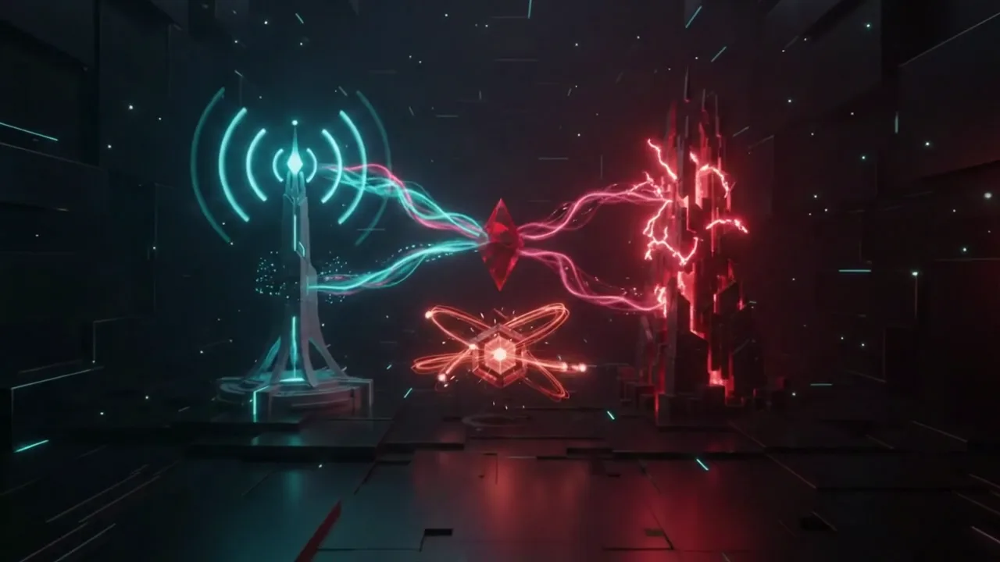
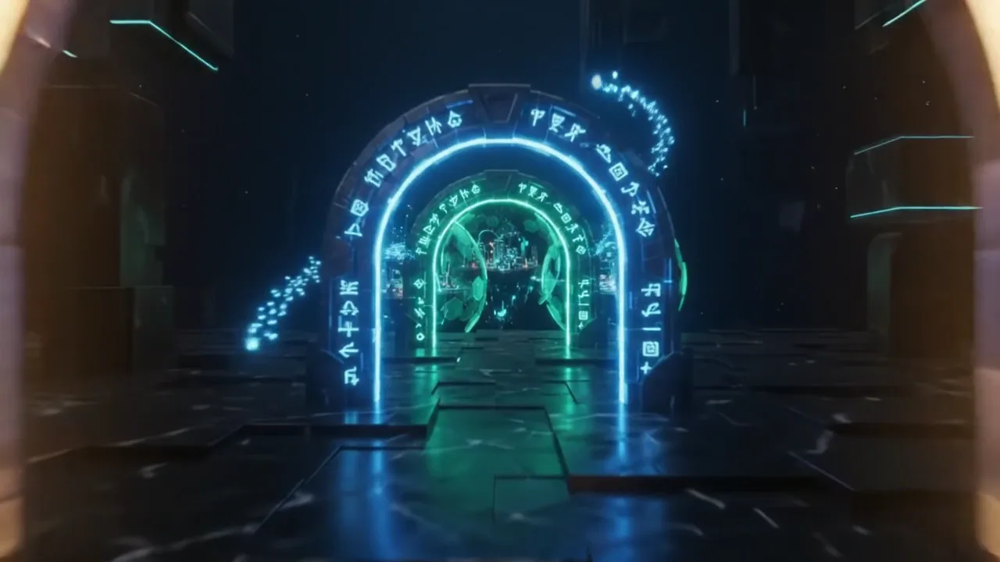

Ciberseguridad · Redes Inalámbricas
Vulnerabilidades en los servicios y seguridad en redes inalámbricas
Riesgos en servicios de red, principales ataques sobre Wi-Fi, evolución de los protocolos de cifrado y estrategias integrales de protección.
Integrantes
JF
Joshua Flores
RM
Rogelio Miranda
Desliza o usa las flechas · 11 scrolls
01 · Introducción
Conectividad sin cables, exposición constante
-
Presencia universal: Wi-Fi conecta computadoras, móviles, impresoras y equipos en hogares, empresas, escuelas y hospitales.
-
Riesgo de radiofrecuencia: las señales viajan por el aire y pueden ser detectadas por cualquier atacante dentro de su alcance.
-
Objetivo de la seguridad: preservar la Confidencialidad, Integridad y Disponibilidad de los datos frente a fallas y ataques.
Diagrama dinámico · Alcance RF & Tríada CIA
Las ondas RF sobrepasan muros físicos; por eso la seguridad busca resguardar la tríada CIA.
02 · Concepto fundamental
¿Qué son las vulnerabilidades en los servicios de red?
-
Definición: es una debilidad o falla en servidores, routers, puntos de acceso, protocolos o configuraciones explotable sin autorización.
-
No solo fallas técnicas: surgen también por errores humanos, falta de mantenimiento, desconocimiento o equipos obsoletos.
-
Consecuencias críticas: robo de información, acceso indebido, alteración de archivos, malware, suplantación, caída de servicios y daño reputacional.
Diagrama dinámico · Cadena Causa → Brecha → Impacto
Ejemplo común: una contraseña simple o la clave predeterminada de un router basta para perder el control de la red.
03 · Vulnerabilidades frecuentes (Parte 1)
Acceso débil, malas configuraciones y permisos abiertos
-
Contraseñas débiles: fechas, nombres o secuencias caen rápido ante herramientas automatizadas; requieren claves largas y MFA.
-
Configuraciones incorrectas: credenciales de fábrica, funciones innecesarias, administración expuesta a Internet o visitantes en la red interna.
-
Falta de control de acceso: sin cuentas individuales ni permisos por rol, cualquiera puede acceder a recursos restringidos.
Simulador interactivo · Autenticación y Compuertas
04 · Vulnerabilidades frecuentes (Parte 2)
Sistemas desactualizados y comunicaciones sin cifrar
-
Firmware y software antiguos: un router o servidor sin parches conserva fallas públicas que permiten tomar el control de la red.
-
Falta de cifrado: sin encriptación, terceros pueden leer contraseñas, datos financieros y documentos en tránsito.
-
Respuesta esencial: instalar actualizaciones oficiales, sustituir equipos sin soporte y exigir WPA2-AES / WPA3 + HTTPS.
Simulador en vivo · Canal de Datos & Parches
05 · Fundamentos Wi-Fi
Seguridad integral en redes IEEE 802.11
-
Estándar IEEE 802.11 (Wi-Fi): transmite datos mediante ondas de radio para ofrecer conectividad flexible y movilidad continua.
-
Desafío del alcance: la señal inalámbrica puede extenderse fuera de la oficina, aula o vivienda, ampliando la superficie de exposición.
-
Enfoque NIST (SP 800-153): no basta proteger el router; hay que asegurar puntos de acceso, dispositivos clientes y la administración.
Modelo NIST · Protección de extremo a extremo
IEEE 802.11 · Cobertura sin fronteras físicas
NIST SP 800-153
06 · Ataques en redes inalámbricas (Parte 1)
Amenazas de acceso, engaño e intercepción
-
Redes Wi-Fi abiertas: permiten conectarse sin contraseña, exponiendo tráfico no cifrado en espacios públicos.
-
Rogue Access Point: punto de acceso falso con nombre similar a una red legítima para atraer víctimas y capturar tráfico.
-
Man-in-the-Middle (MitM): el atacante se interpone entre dos dispositivos para leer o alterar credenciales y datos.
-
Packet Sniffing: captura y análisis de paquetes que circulan sin cifrado adecuado por el espectro inalámbrico.
Mapa interactivo de amenazas

ROGUE ACCESS POINT
Vector activo
07 · Ataques en redes inalámbricas (Parte 2)
Desconexión forzada, fuerza bruta y saturación
-
Deauthentication: manipula tramas de administración para desconectar usuarios y forzarlos hacia una red falsa. Se mitiga con PMF (802.11w / WPA3).
-
Fuerza bruta: prueba miles de claves contra redes o paneles. Prevención: contraseñas largas, límite de intentos, bloqueo y MFA.
-
Denegación de servicio (DoS): interferencia o saturación que genera lentitud o caída total. Prevención: monitoreo y detección de anomalías.
Telemetría cinética en vivo
Saturación de canal: el tráfico malicioso colapsa la disponibilidad de la red inalámbrica.
08 · Evolución criptográfica
Protocolos de seguridad en redes inalámbricas
-
WEP (Obsoleto): primer estándar Wi-Fi, hoy vulnerable con facilidad; nunca debe utilizarse.
-
WPA (TKIP): transición frente a WEP; actualmente antiguo y desaconsejado en nuevas instalaciones.
-
WPA2 (AES-CCMP): estándar muy extendido y válido bien configurado, mientras exista transición de dispositivos.
-
WPA3 (SAE + PMF): generación actual con autenticación más fuerte, tramas protegidas obligatorias y defensa contra ataques a contraseñas.
Comparador interactivo · WEP → WPA3

Progresión de fortaleza criptográfica
WPA3 · 100% RECOMENDADO
WPA3 (Wi-Fi Protected Access 3): incorpora autenticación SAE en redes personales y Protected Management Frames (PMF) obligatorias, dificultando ataques por diccionario y desautenticación.
09 · Defensa en profundidad
Medidas prácticas para proteger redes inalámbricas
-
Cifrado y credenciales: usar WPA3 / WPA2-AES, contraseñas únicas robustas y cambiar usuario/clave de fábrica del router.
-
Endurecimiento técnico: actualizar firmware/software periódicamente y desactivar funciones innecesarias o accesos remotos.
-
Firewall y segmentación: filtrar tráfico con firewall y separar redes independientes para empleados, visitantes y dispositivos IoT.
-
Monitoreo y capacitación: auditar equipos conectados, implementar detección de intrusos (WIDS) y formar a los usuarios.
Arquitectura animada · Firewall, VLANs & Radar IDS
La seguridad efectiva combina múltiples capas técnicas junto con la capacitación continua de los usuarios.
10 · Impacto organizacional
Importancia en empresas e instituciones
-
Información confidencial: empresas e instituciones educativas resguardan bases de datos, sistemas administrativos y expedientes críticos.
-
Costo de una brecha: acceso no autorizado provoca interrupción operativa, filtración comercial, pérdidas económicas y daño reputacional.
-
Gestión continua: políticas formales, evaluaciones de vulnerabilidades, inventario de red, respuesta a incidentes y copias de seguridad.
Ciclo de Resiliencia Organizacional
Empresas · Universidades · Instituciones
Continuidad operativa
Cierre · Conclusión
Conclusión
-
Riesgo real y constante: aunque Wi-Fi brinda movilidad y comodidad, claves débiles, malas configuraciones, redes abiertas o ataques como Rogue AP y DoS exponen la red.
-
Protección combinada: asegurar una red exige protocolos modernos (WPA2 / WPA3), firewalls, actualizaciones, control de acceso y supervisión constante.
-
Tecnología + cultura: la seguridad informática depende tanto de los equipos como del comportamiento de los usuarios y las políticas organizacionales.
Confidencialidad
Integridad
Disponibilidad
Síntesis · Núcleo Unificado de Seguridad
Joshua Flores · Rogelio Miranda — Vulnerabilidades en los servicios y seguridad en redes inalámbricas